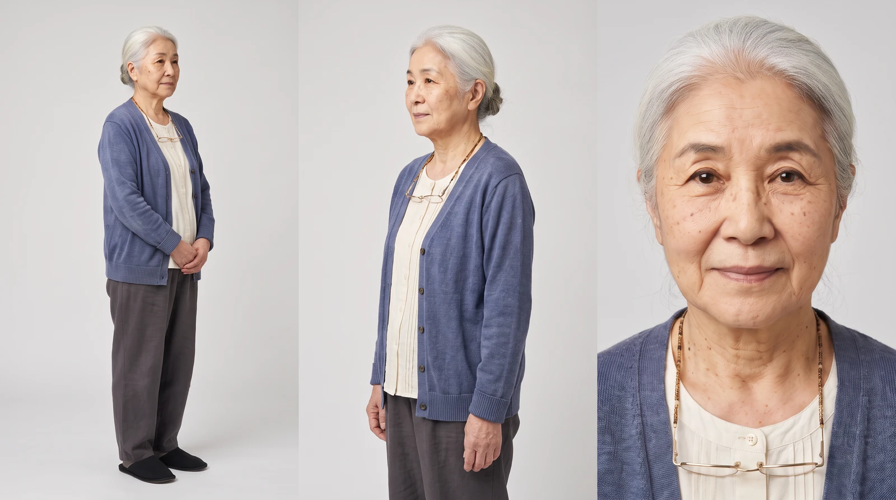
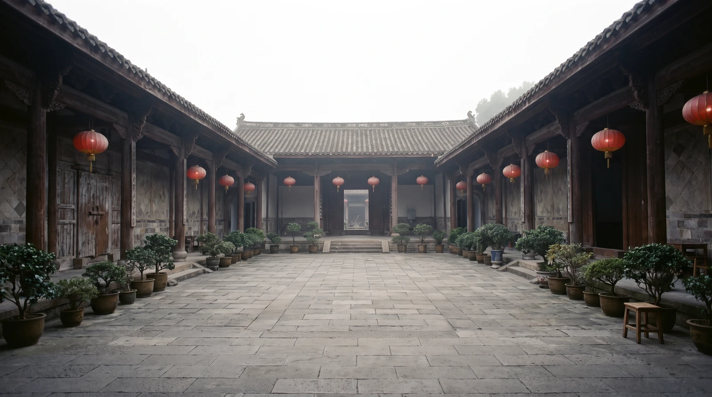
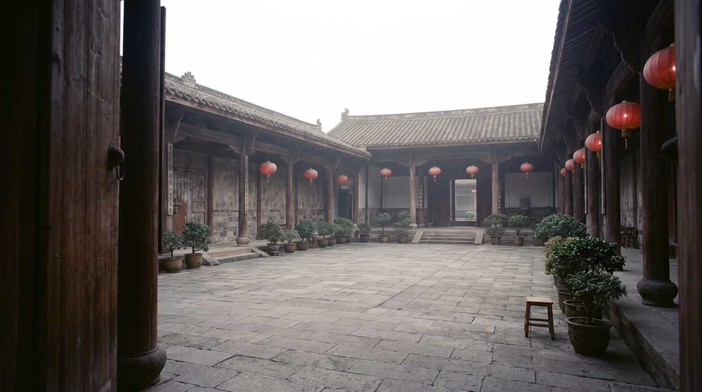
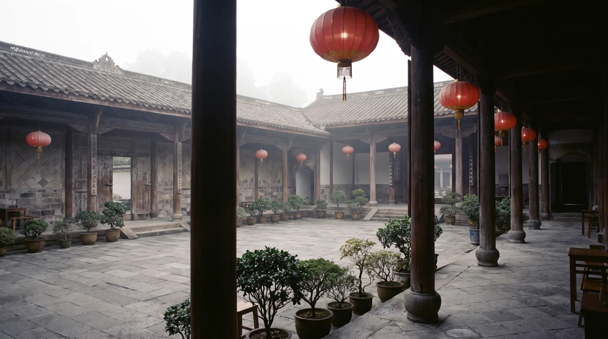
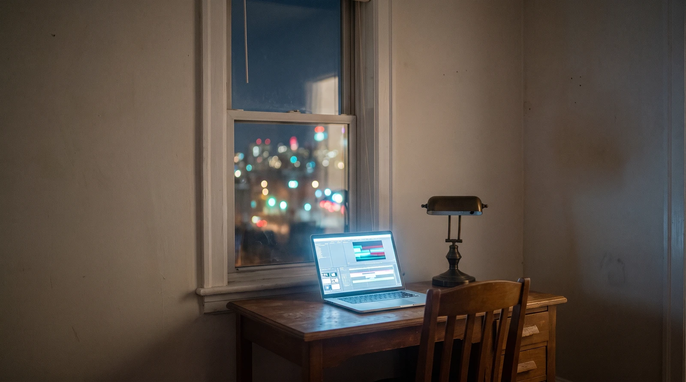
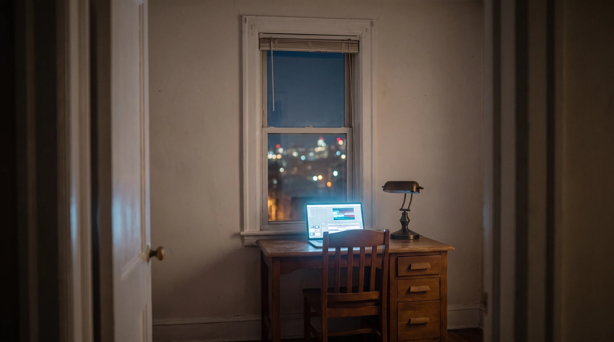
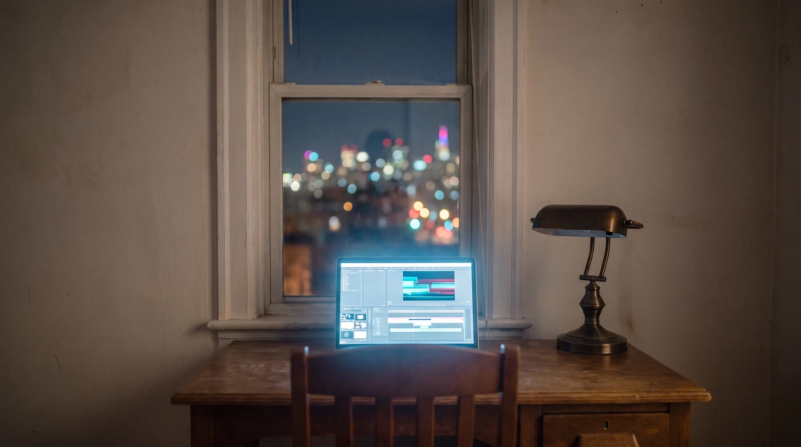
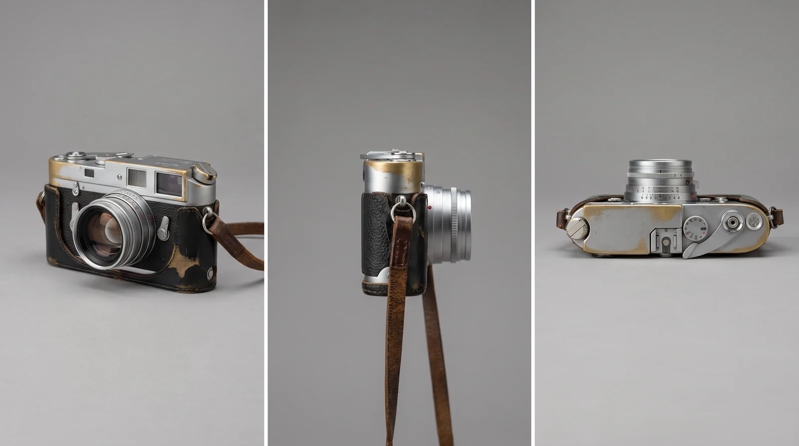

1 full body · faces right →2 ← faces left · waist up3 face
The man
@Image 1
Attach: a photo of your person
Character sheet: three panels side by side on one wide canvas, the same man in all three, the man in the reference image. Panel 1 (left): full body, head to toe with both feet in frame, standing, his body and face turned toward the RIGHT edge of the image. Panel 2 (middle): waist up, his body and face turned toward the LEFT edge of the image, the opposite way from panel 1, so the other side of his face shows. Panel 3 (right): face close-up, looking straight into the lens. Use the reference only for his face, hair and clothes, not its poses. He is an East Asian man in his early thirties, lean build, black hair in a short textured crop with tapered sides, clean-shaven, dark brown eyes, a dark green crew-neck knit sweater, slim black trousers, black low-top sneakers. Plain light grey studio background, soft even light, real unretouched skin texture. One person per panel, no props, no text, no logos.

1 full body · faces right →2 ← faces left · waist up3 face
The woman
@Image 2
Attach: a photo of your person
Character sheet: three panels side by side on one wide canvas, the same woman in all three, the woman in the reference image. Panel 1 (left): full body, head to toe with both feet in frame, standing, her body and face turned toward the RIGHT edge of the image. Panel 2 (middle): waist up, her body and face turned toward the LEFT edge of the image, the opposite way from panel 1, so the other side of her face shows. Panel 3 (right): face close-up, looking straight into the lens. Use the reference only for her face, hair and clothes, not its poses. She is an East Asian woman in her late seventies, small and slight, silver-white hair in a low bun with loose strands at the temples, deep laugh lines, age spots, warm dark brown eyes, thin gold-rimmed reading glasses on a beaded cord at her chest, a faded indigo knit cardigan over a cream cotton blouse, loose dark grey trousers, black cloth slippers. Plain light grey studio background, soft even light, real unretouched skin texture. One person per panel, no props, no text, no logos.
Places

The courtyard
@Image 3
Attach: a photo of the place
One wide shot of an empty courtyard in the early morning, the courtyard in the reference image. The whole place in one frame, seen from one corner at chest height with a wide lens: grey flagstone floor, dark timber pillars and grey tiled roofs on three sides, red paper lanterns hanging from the eaves, rows of potted bonsai along the walls, an old wooden gate in the wall on the left side, a low wooden stool beside the bonsai on the right side, soft mist in the air, soft overcast morning light with no hard shadows. Shot on 35mm film, fine grain, muted colours with the red lanterns the only strong colour. No people, no text or signs. One single image: no panels, no grid, no borders.

From the gate
@Image 4
Attach: the courtyard wide shot
Another angle of the same courtyard as in the reference image, a B-roll shot, not a close-up: a medium-wide view from just inside the old wooden gate in the left wall, at chest height, looking across the courtyard toward the low wooden stool beside the potted bonsai on the right side. The grey flagstones, dark timber pillars, grey tiled roofs, red paper lanterns and rows of bonsai are the same as in the reference image. Soft mist, the same overcast morning light, no hard shadows. Shot on 35mm film, fine grain. No people, no text or signs. One single image: no panels, no grid, no borders.

From the walkway
@Image 5
Attach: the courtyard wide shot
Another angle of the same courtyard as in the reference image, a B-roll shot, not a close-up: a medium-wide view from under the covered walkway on the right side, between the dark timber pillars, looking back across the open courtyard toward the old wooden gate in the left wall, red paper lanterns hanging from the eaves in the foreground. The flagstones, roofs, lanterns and rows of bonsai are the same as in the reference image. Soft mist, the same overcast morning light. Shot on 35mm film, fine grain. No people, no text or signs. One single image: no panels, no grid, no borders.

The desk
@Image 6
Attach: a photo of the place
One wide shot of a small apartment corner at night, the room in the reference image. The whole corner in one frame from about three meters back at seated eye height: a plain wooden desk against a bare off-white wall under one window, city lights blurred into soft bokeh outside the glass, an open silver laptop on the desk glowing with an abstract editing timeline of coloured bars, a switched-off brass desk lamp, a wooden chair pushed in. The only light is the cool blue-white laptop glow and faint city glow through the window. Shot on 35mm film, fine grain. No people, no readable text on the screen or anywhere. One single image: no panels, no grid, no borders.

From the doorway
@Image 7
Attach: the desk wide shot
Another angle of the same room as in the reference image, a B-roll shot, not a close-up: a medium-wide view from the open doorway across the dark apartment at night, the desk corner in the distance under the window, the open silver laptop glowing on the desk, the brass desk lamp switched off, the wooden chair pushed in, city lights blurred into soft bokeh through the window. The only light is the cool laptop glow and faint city glow. The desk, window, lamp and walls are the same as in the reference image. Shot on 35mm film, fine grain. No people, no logos, no readable text. One single image: no panels, no grid, no borders.

Behind the chair
@Image 8
Attach: the desk wide shot
Another angle of the same room as in the reference image, a B-roll shot, not a close-up: a medium view from behind the wooden chair at seated shoulder height, looking over the desk toward the window: the open silver laptop glowing with the editing timeline, the switched-off brass lamp to its right, city lights blurred into soft bokeh through the glass. The cool laptop glow is the only light in the room. The desk, window, lamp and walls are the same as in the reference image. Shot on 35mm film, fine grain. No people, no logos, no readable text. One single image: no panels, no grid, no borders.
Prop

The camera
@Image 9
Attach: nothing
PROP SHEET, three frames side by side on one 16:9 canvas, seamless neutral grey studio backdrop, soft even light, photoreal detail, no people, no hands: the SAME single object in all three frames, a worn 1970s silver-and-black 35mm rangefinder film camera with a fixed 40mm lens and no lens cap, brassing on its corners and top plate edges where the chrome has rubbed through, black leatherette body covering peeling slightly at one corner, a scuffed brown leather neck strap on brass rings. Frame 1 three-quarter front view, frame 2 side profile with the strap draped down, frame 3 top view showing the film advance lever and the shutter button. No brand names, no logos, no readable text or engravings anywhere.
The video prompt
Fifteen seconds, with every sheet
Attach in this order: @Image 1 the man · @Image 2 the woman · @Image 3 the courtyard · @Image 4 from the gate · @Image 5 from the walkway · @Image 6 the desk · @Image 7 from the doorway · @Image 8 behind the chair · @Image 9 the camera · @Audio 1 your narration
GLOBAL STYLE: Quiet naturalistic drama, photoreal live action, shot on 35mm color negative film, fine organic grain, gentle halation on highlights, a muted palette in which the red paper lanterns and the man's dark green sweater are the only strong colors. No subtitles, no captions, no on-screen text, no logos, nothing readable anywhere.
SCENE: A man in his thirties returns the old film camera an elderly neighbor lent him when he was ten, and shows her the fifteen-second film he finally made for her.
REFERENCES: @Image 1 is THE MAN's character sheet, one person in three views, both sides of his face: use his face, hair, build and wardrobe, not the grey studio background. @Image 2 is THE WOMAN's character sheet, one person in three views, both sides of her face: use her face, hair, glasses and wardrobe, not the grey studio background. @Image 3 is THE COURTYARD, one wide shot of the whole empty place: use its layout, flagstones, lanterns, bonsai and misty light. @Image 4 is a B-roll angle of THE COURTYARD, from just inside the wooden gate on the left. @Image 5 is a B-roll angle of THE COURTYARD, from under the walkway on the right, looking back at the gate. @Image 6 is THE DESK, one wide shot of the room at night: use the desk, window, laptop and night light. @Image 7 is a B-roll angle of THE DESK, from the doorway across the room. @Image 8 is a B-roll angle of THE DESK, from behind the chair toward the window. @Image 9 is THE CAMERA prop sheet, one object in three views: use its exact shape, brassing and strap. @Audio 1 is THE MAN's narration voice: use its voice and pacing for the three narration lines. Where these references and the shot description disagree, the shot description wins.
CHARACTERS: THE MAN, an East Asian man in his early thirties, lean build, black hair in a short textured crop with tapered sides, clean-shaven, dark brown eyes, a dark green crew-neck knit sweater, slim black trousers, black low-top sneakers. THE WOMAN, an East Asian woman in her late seventies, small and slight, silver-white hair pulled back in a low bun with loose strands at the temples, deep laugh lines, warm dark brown eyes, thin gold-rimmed reading glasses on a beaded cord at her chest, a faded indigo knit cardigan over a cream cotton blouse, loose dark grey trousers, black cloth slippers. Only these two people exist in the entire video.
PROP: THE CAMERA, one worn 1970s silver-and-black 35mm rangefinder film camera, fixed lens with no cap, brassing on its corners where the chrome has rubbed through, black leatherette peeling at one corner, a scuffed brown leather strap. There is only one camera in the entire video. The man's phone is a plain black smartphone.
LOCATION 1, THE DESK, night: a small apartment corner, a plain wooden desk against a bare off-white wall under one window, city lights blurred into soft bokeh outside the glass, an open silver laptop showing an abstract editing timeline of colored bars, a switched-off brass desk lamp.
LOCATION 2, THE COURTYARD, early morning: a courtyard of grey flagstones framed by dark timber pillars and grey tiled roofs, red paper lanterns hanging from the eaves, rows of potted bonsai along the walls, a wooden gate on the left side, soft mist in the air.
FIRST FRAME AND BLOCKING: Segment 1, THE MAN sits at the desk screen-left with his back three-quarters to camera, the laptop glowing in front of him, THE CAMERA resting on the desk to the right of the laptop. Segments 2 to 4, THE WOMAN sits on a low wooden stool beside the potted bonsai on the right side of the courtyard with a bowl of pea pods in her lap. THE MAN enters through the gate on the left and always stays on her left side. They never swap sides.
FORMAT MODE: Controlled four-segment sequence, three HARD CUTs, 15 seconds total, real-time motion.
OPTICS AND CAMERA: Segment 1 at a 47° field of view, a slow push-in over the man's shoulder toward the glowing screen, the screen content never readable. Segment 2 at 84°, wide from just inside the gate, locked-off at chest height. Segment 3 at 29°, short telephoto two-shot from 3 meters, slow push-in, shallow focus with the lanterns melting into soft red bokeh. Segment 4 at 47°, medium two-shot, locked-off with a gentle handheld breath.
ACTION TIMING: 0.0s to 3.5s, SEGMENT 1, THE DESK: he drags the last clip into place on the timeline, then reaches over and rests his hand on THE CAMERA. HARD CUT. 3.5s to 7.0s, SEGMENT 2, THE COURTYARD: the gate swings open and he walks in holding THE CAMERA by its strap; she looks up from the pea pods, her eyes narrow, then widen in recognition. HARD CUT. 7.0s to 11.0s, SEGMENT 3: he crouches at her left side and holds up his phone so she can see the screen; its cool light plays across her face; at 9.5s her hand rises to her mouth and her eyes glisten. HARD CUT. 11.0s to 15.0s, SEGMENT 4: he places THE CAMERA in her hands; she turns it over, laughs and swats his arm; at 12.5s she speaks her line; at 14.0s she lifts THE CAMERA to her eye and takes his picture, and he grins.
PHYSICS: Mist drifts slowly through the courtyard, lantern tassels sway in a light breeze, the camera strap swings with real weight, pea pods shift in the bowl when she moves.
LIGHTING: Segment 1, the only light is the cool blue-white laptop glow on his face and hands plus faint city glow through the window. Segments 2 to 4, soft overcast morning skylight diffused by mist, no hard shadows; in Segment 3 the phone adds a soft cool glow on her face and glasses.
AUDIO: Off-screen narration in THE MAN's voice, calm and warm, spoken in English, his mouth stays closed while it plays: at 0.5s {Everything I film started with her camera.} At 4.0s {I borrowed it when I was ten.} At 7.5s {Twenty years, to make her fifteen seconds.} On screen, only THE WOMAN speaks, at 12.5s, amused, in English: {Took you long enough.} Sound effects: <soft laptop key taps> and <a wall clock ticking> in Segment 1, <an old wooden gate creaks open> at 3.6s, <morning birdsong> through Segments 2 to 4, <a film camera shutter clicks> at 14.2s. Music: (a gentle solo piano melody enters at 7.0s and swells softly to the end). No other voices.
POSITIVE LOCKS: Exactly two people, never a third. Both keep the same face, hair and wardrobe across every cut. Only one camera, and it passes from his hand to hers at 11.5s and stays in hers. The phone and laptop screens never show readable text. No subtitles.
Bring: your sheets, two takes, and the prompt you used.